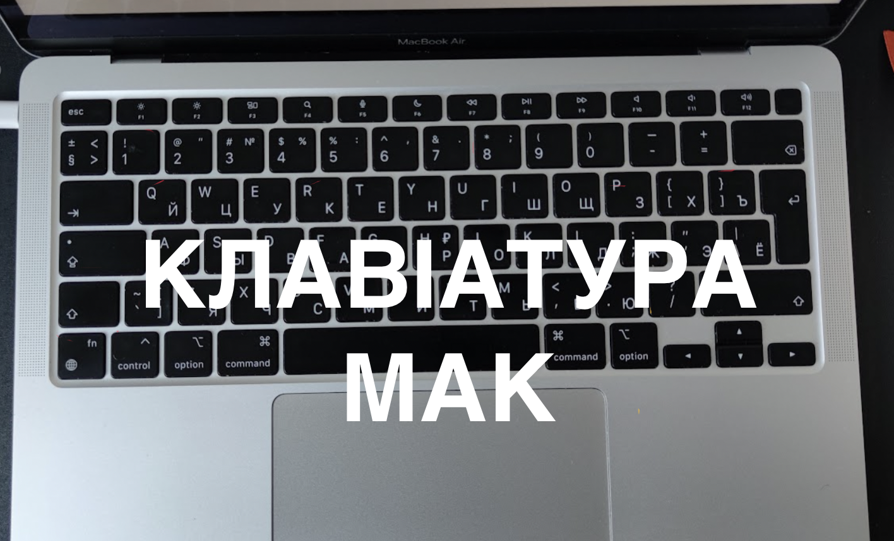

На цій сторінці зібрані найважливіші матеріали про розташування клавіш на Mac, популярні символи і базові функції клавіатури, до яких найчастіше повертаються нові користувачі.

Популярні питання щодо розташування клавіш на Mac
- Як поставити двокрапку ":" на Mac
- Як поставити апостроф "ʼ" на Mac
- Як поставити кому "," на Mac
- Як поставити крапку "." на Mac
- Як поставити крапку з комою ";" на Mac
- Як поставити знак питання "?" на Mac
- Як поставити знак відсотка "%" на Mac
- Як поставити символ номер "№" на Mac
- Як поставити знак пошти "@" на Mac
- Як поставити нижнє підкреслення "_" на Mac
- Як поставити плюс "+" на Mac
- Як поставити знак "=" на Mac
- Як поставити тире "-" на Mac
- Як поставити зірочку "*" на Mac
- Як поставити лапки на Mac
- Як поставити дужки на Mac
- Де буква "Ї" на клавіатурі Mac
- Як відкрити клавіатуру смайлів і емодзі на Mac
- Символ гривні "₴" на клавіатурі Mac
- Як поставити символ долара "$" на Mac
- Як поставити символ євро "€" на Mac
- Як поставити слеш "/" на Mac
- Як поставити знак менше "<" на Mac
- Як поставити знак більше ">" на Mac
Базові клавіші та що вони роблять
Command — головна клавіша для більшості швидких дій на Mac. Саме з нею працюють копіювання, вставка, відкриття нової вкладки, пошук і десятки інших комбінацій.
Option — допомагає вводити додаткові символи і відкривати альтернативні дії в macOS.
Control — використовується в системних скороченнях і контекстних діях. Наприклад, `Control + Space` часто перемикає мову або відкриває налаштування джерел вводу.
Enter — підтверджує дію, створює новий рядок і часто працює як кнопка "ОК" у формах та діалогах.
Tab — переходить між полями вводу і допомагає рухатися по інтерфейсу без мишки.
Caps Lock — вмикає великі літери. На частині Mac його також можна переналаштувати для зміни мови.
Delete — видаляє символ ліворуч від курсора. Для видалення праворуч часто використовують `Fn + Delete`.
Fn — змінює поведінку верхнього ряду клавіш і бере участь у навігаційних комбінаціях.
Що роблять клавіші F1-F12 на MacBook
- F1 — зниження яскравості дисплея.
- F2 — підвищення яскравості дисплея.
- F3 — відкриття Mission Control.
- F4 — відкриття Launchpad.
- F5 — зменшення яскравості підсвітки клавіатури.
- F6 — підвищення яскравості підсвітки клавіатури.
- F7 — попередній трек.
- F8 — пауза або відтворення.
- F9 — наступний трек.
- F10 — зменшення гучності.
- F11 — вимкнення звуку.
- F12 — підвищення гучності.
Якщо хочеш швидше розібратися з клавіатурою в цілому, відкрий також головні гарячі клавіші Mac і гайд про перемикання мови.